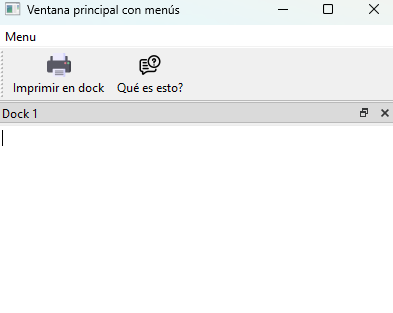
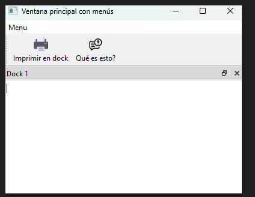

2DAM DI · Tarea
QT6 - 8
Instrucciones
Crea un componente tipo dock con un QTextEdit a la aplicación y un componente principal. Por defecto, el dock se situará en la parte superior de la ventana.
Añadimos una acción «Imprimir en dock» que imprima en un dock «Acción Pulsada». Su atajo será Ctrl + P y, además, aparecerá en una barra de herramientas y en un menú. Su texto de ayuda será el siguiente: «Al ejecutar esta acción, se añadirá el texto "Acción pulsada" en el dock. Se puede lanzar por Menú > Imprimir en dock, con Ctrl + P o haciendo clic en el botón correspondiente de la barra de herramientas».
Añadimos un botón ¿Qué es esto? a la aplicación con el comportamiento habitual.


Materiales de la tarea
No hay archivos adjuntos en esta tarea.